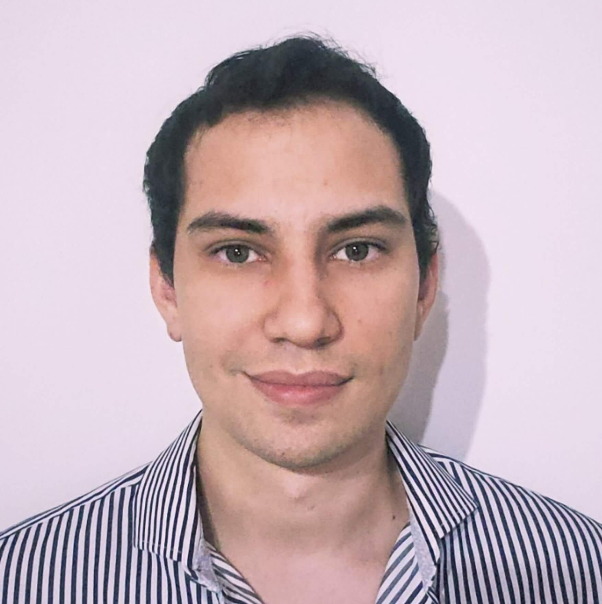
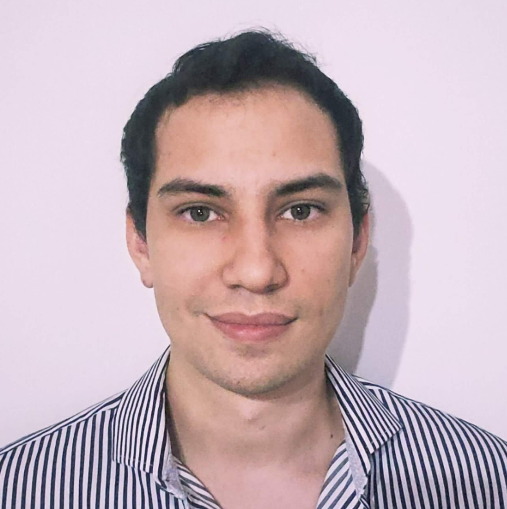

- Profesor / Alumnado
- ONLINE
 

Marcelo Romero
Full Stack Developer - Telecom
3 años de experiencia en el desarrollo de themes y plugins a
medida en Wordpress ( PHP ). Realice proyectos como
freelancer de Front-end Developer en Vue/Nuxt y ReactJs /
NextJs. En ambos casos utilizo para el diseño frameworks
como Foundation, Bootstrap, Skeleton, bulma.io y CSS3
vanilla
Telecom Argentina
Frontend Developer
mayo de 2022 - Presente (1 año)
Zaro Estudio Creativo
Desarrollador de front-end
febrero de 2021 - Presente (2 años 3 meses)
Cabureweb.com
Desarrollador web
febrero de 2018 - enero de 2021 (3 años)


Facundo Panozzo
Actualmente realizo proyectos como freelancer de Front-end
Developer en ReactJs / NextJs. Utilizo para el diseño
frameworks como Bootstrap, bulma.io y CSS3 vanilla
Zaro Estudio Creativo
Desarrollador de front-end
mayo de 2022 - Presente (8 meses)